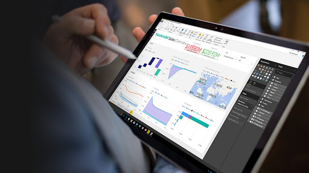

How to Scrape Data from Websites
Web scraping with Python BeautifulSoup is a technique for extracting information from websites. BeautifulSoup is a Python library that is used for web scraping purposes to parse HTML and XML data. The library provides a simple and efficient way to extract data from websites, allowing users to access specific information that is required. To use BeautifulSoup, the website's HTML or XML content must be retrieved, and then parsed using BeautifulSoup's methods. Once the data is parsed, it can be manipulated, filtered, and extracted, and the results can be stored in a format that is usable for further analysis. The extracted information can then be used for a variety of purposes, such as data analysis, data mining, or even for creating new applications or services based on the data obtained.

Creating Data Analysis projects in Python is essential for career development. It is the best way to learn new data analytics tools, practice the skills you have acquired, and demonstrate your competencies.Here,I have created projects around my true interests and also worked on topics that are understandable to others using various python libraries.This is a very diverse combination of projects spanning across various fields with well detailed explanation of all projects. Use the link to view them
In this project, I reviewed, analyzed, detected, modified, and removed.“dirty” data from a Housing Dataset to make it "clean" and available for further Exploration using SQL Server

All of us have been impacted by COVID-19 in one way or another.Looking at the daily case numbers,the basic reproduction number,or mortality rates has become a routine.But what is behind those numbers?In this project,I carried out an exploration using SQL Server.

Data has become a ubiquitous part of business today, making it essential for businesses to understand how to gain value from the wealth of raw data available to them. The right information must be gleaned from the data and presented VISUALLY for making well-informed business decisions.